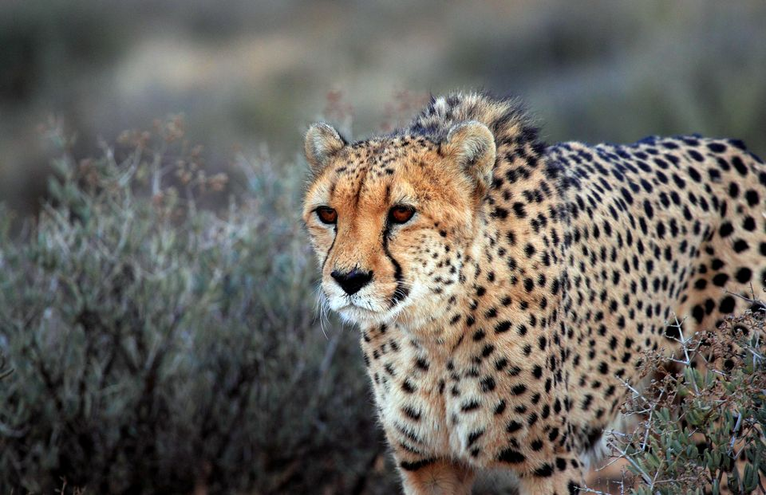
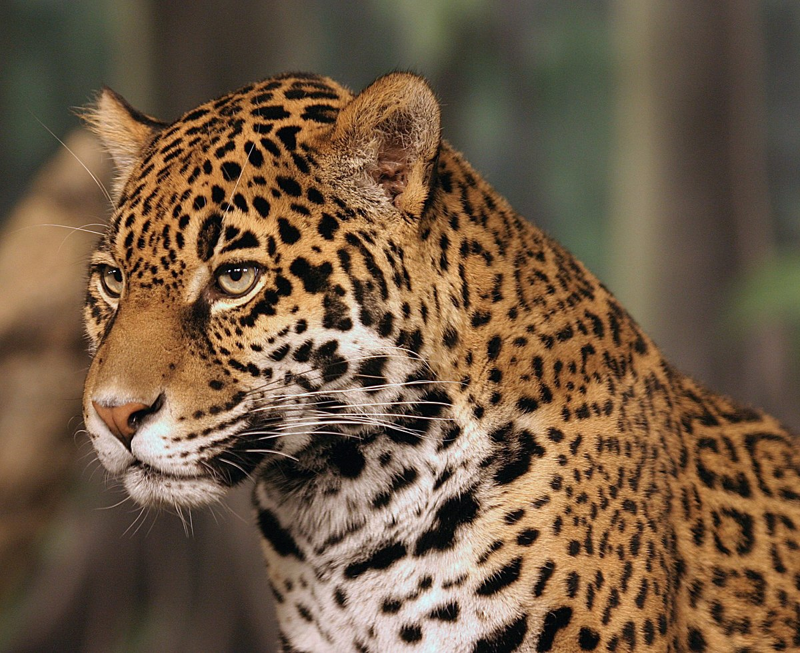
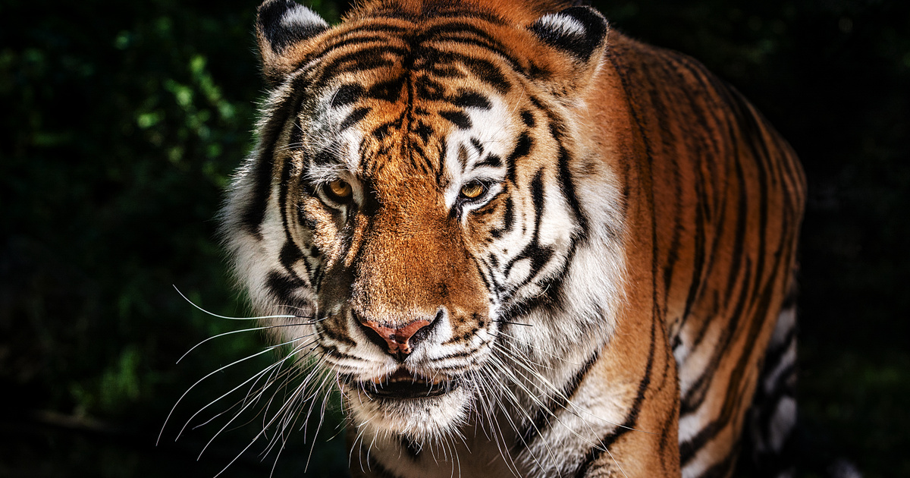

- Fajta: Gepárd
-
Leírás:
A gepárd nagyon izmos, bár a teste karcsúnak és törékenynek tűnik. Mellkasa domború, míg a hasa mélyen behúzott. Kis feje, rövid orra és magasan ülő szemei, kis kerek fülei és a maximális oxigénbevitelhez nagy orrlyukai vannak. A gepárd szőre sárgás színű, fekete kerek pettyekkel, amely segíti az álcázásban. Az orra két oldalán fekete 'könnycsepp'-szerű minta húzódik lefelé a szemétől a szája sarkáig. A felnőtt állatok súlya 21–72 kg között mozog, testhossza 110–150 cm, farokhossza 60–84 cm.
- Maximális sebesség: 125 km/h
- Átlagos tömeg: 52 kg
- Átlagos magasság: 79 cm
- Fajta: Jaguár
-
Leírás:
Ez a nagymacska az egyetlen még élő Panthera nembeli állat az amerikai szuperkontinensen. A DNS-vizsgálatok azt mutatják, hogy az oroszlánnak, a tigrisnek, a jaguárnak, a leopárdnak, a hópárducnak és a ködfoltos párducnak közös őse van; ez az ősmacska körülbelül 6–10 millió évvel ezelőtt élt. Az eddig felfedezett maradványok pedig azt mutatják, hogy a Panthera macskanem csak 2–3,8 millió éve jelent meg. A törzsfejlődéses (philogenesis) kutatások szerint a ködfoltos párduc (Neofelis nebulosa) a bazálisfaj ebben az állatcsoportban; azaz meglehet, hogy belőle fejlődtek ki a többi fajok. Hogy melyik a korábban vagy újabban kifejlődött párducforma, ma még nem ismert.
- Maximális sebesség: 64 km/h
- Átlagos tömeg: 76 kg
- Átlagos magasság: 70 cm


- Fajta: Tigris
-
Leírás:
A tigris (Panthera tigris) a ragadozók rendjébe és a macskafélék családjába tartozó faj. Valamennyi alfaja veszélyeztetett. Teljes állománya száz év alatt 95%-kal csökkent. Leginkább Indiában sikeres a faj megmentése. A tigris a legnagyobb ma élő macskaféle, méretben csak a jégkorszaki amerikai oroszlán és a smilodon múlta felül. A tigrisek méretei és egyéb jellemzői alfajonként változóak. A vadon élő hím tigrisek (a kihalt alfajokat nem beleszámítva) 100 és 306 kg közötti tömegűek, hosszuk a farokkal együtt 220–330 cm (a farok hossza 60–110 cm). Nemi kétalakúság figyelhető meg, a nőstény tigrisek jóval kisebbek, 75–167 kg-ot érhetnek el, hosszuk 215–275 cm. A legkisebb alfaj a szumátrai tigris, a legnagyobb a szibériai tigris és a bengáli tigris.
- Maximális sebesség: 82 km/h
- Átlagos tömeg: 220 kg
- Átlagos magasság: 99 cm
- Fajta: Oroszlán
-
Leírás:
Az oroszlánok Fekete-Afrika legnagyobb részén megtalálhatók. Főleg a fás területeken fordulnak elő, de megtalálhatók a félsivatagos és bozótos helyeken is. Korábban az európaiak mértéktelen vadászata miatt Afrika oroszlánállománya megcsappant, és egyes alfajok, mint a fokföldi oroszlán, ki is haltak. Ma a legtöbb oroszlán Közép-Afrika és Dél-Afrika országaiban él (Botswana, Angola, Mozambik, Zambia, Kongói Demokratikus Köztársaság). Ennél kisebb a kelet-afrikai és a kevéssé ismert nyugat-afrikai oroszlánpopuláció. A nyugat-afrikai oroszlán (Panthera leo senegalensis alfaj) példányszáma 20 000 köré tehető. Az 1940-es évek közepén még 70 000 oroszlán élt a Földön.[
- Maximális sebesség: 78 km/h
- Átlagos tömeg: 185 kg
- Átlagos magasság: 105 cm

Lekért információ: